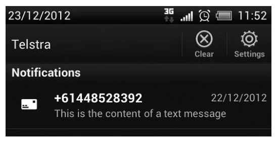

In this project, the Arduino will send a text message to another cell phone when an event occurs. To simplify the code, we’ll use the SerialGSM Arduino library, available from https://github.com/meirm/SerialGSM/. After you’ve installed the library, restart the Arduino IDE.
The hardware you’ll need for this project is identical to that for Project 63.
The Sketch
Enter the following sketch into the Arduino IDE, but don’t upload it yet:
// Project 64 - Building an Arduino Texter
#include <SerialGSM.h>
#include <SoftwareSerial.h>
❶ SerialGSM cell(2,3);
void setup()
{
pinMode(7, INPUT);
delay(30000); // wait for the GSM module
cell.begin(9600);
}
void textSomeone()
{
cell.Verbose(true); // used for debugging
cell.Boot();
cell.FwdSMS2Serial();
❷ cell.Rcpt("+ xxxxxxxxxxx "); // replace xxxxxxxxxxx with the
// recipient's cell number
❸ cell.Message("This is the contents of a text message");
cell.SendSMS();
}
void loop()
{
❹ if (digitalRead(7) == HIGH)
{
textSomeone();
}
if (cell.ReceiveSMS())
{
Serial.println(cell.Message());
cell.DeleteAllSMS();
}
}How It Works
The GSM shield is set up as normal at ❶ and in void setup(). Button presses are detected at ❹, and the function textSomeone is called. This simple function sends a text message to the cellular phone number stored at ❷.
Before uploading the sketch, replace xxxxxxxxxxx with the recipient’s cellular phone number in international format: the country code, the area code, and the number, without any spaces or brackets. For example, to send a text to 212.555.1212 in the United States, you would store +12125551212.
The text message to be sent is stored at ❸. (Note that the maximum length for a message is 160 characters.)
After you have stored a sample text message and a destination number, upload the sketch, wait 30 seconds, and then press the button. In a moment, the message should arrive on the destination phone, as shown in Figure 20-10.

Project 64 can be integrated quite easily into other sketches, and various text messages could be sent by comparing data against a parameter with a switch-case function.